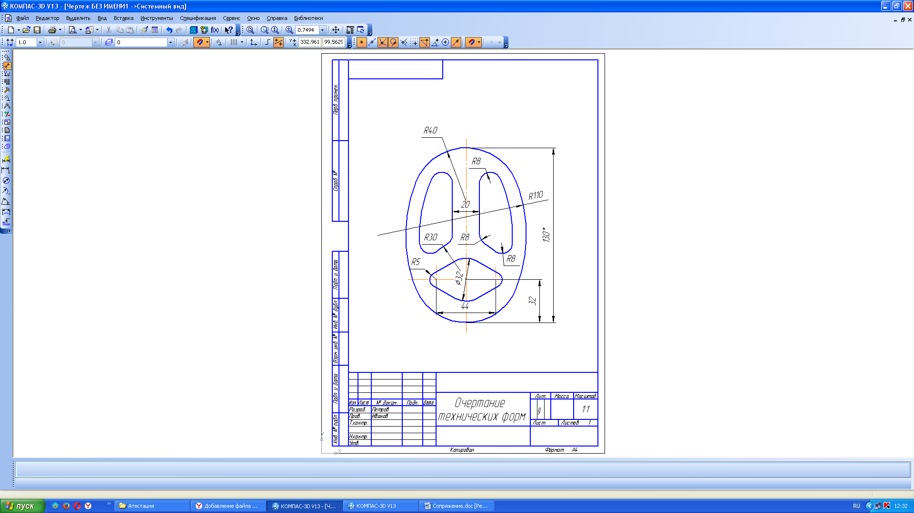

Історія
Першими винайшли компас китайці. Хоча існує Ольмекський артефакт — гематит (датований до 1000-го року до н. е.), що можливо використовувався як магніт, хоча й існують інші версії. Перші китайські компаси ймовірно використовувалися для точнішого вирівнювання розташування нових будівель, згідно з принципами Фен-шуй. Перша писемна згадка в Книзі володаря долини Диявола (鬼谷子, 4 століття до н.е.). В подальшому винахід потрапив до Європи. Щодо шляху і часу існує низка версій, можливо за посередництва арабів.
Крім того, курсор бере активну участь у процесі створення геометричних об'єктів креслення й об'єктів оформлення, тобто є, по суті, вістрям вашого "електронного олівця".
При класичному кресленні за допомогою олівця й лінійки конструктор визначає координати точок, довжину відрізків, радіуси кіл і дуг з тою точністю, яку можуть забезпечити застосовувані креслярські інструменти.
Дійсні розміри й положення елементів на полі креслення задаються за допомогою розмірів: лінійних, кутових, діаметральних і радіальних.
У машинній графіці все інакше. Засоби графічних систем дозволяють задавати параметри геометричних елементів з абсолютною точністю й одержувати ідеальну геометрію креслення. Ця особливість комп'ютерного креслення має величезні переваги.
На основі точної геометрії графічний редактор дає можливість операторові скористатися засобами напівавтоматичного проставляння розмірів. При цьому система визначає параметри елементів (координати точок, довжини, кути) і на їхній основі сама обчислює значення розмірів. Саме точність комп'ютерних креслень дає можливість передавати геометрію деталей (наприклад, контур вала або профіль кулачка) безпосередньо в технологічні системи, забезпечувати наскрізні технології проектування й виготовлення. На основі отриманих даних такі системи генерують керуючі програми для верстатів зі ЧПУ (числовим програмним керуванням).